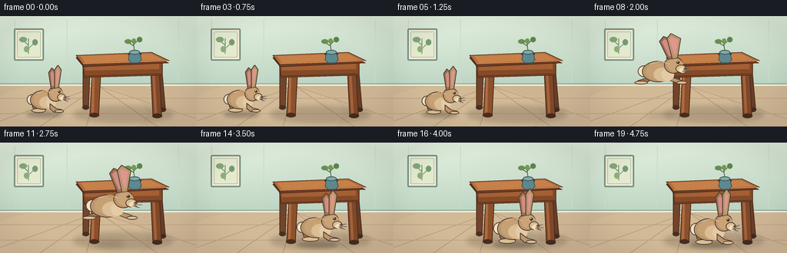
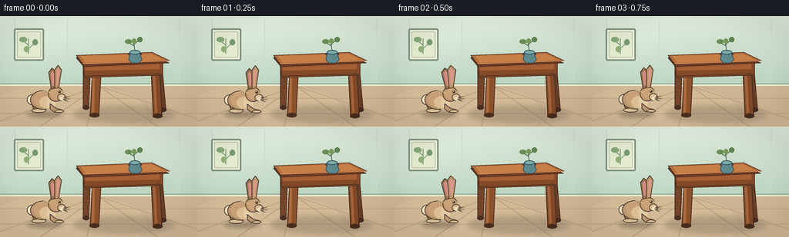

CODING AGENTS AS PIXEL WORLD MODELS
traex/GPT-5.6-Sol · dynamic_spatial_relationship_0020
点击播放 · 原生 RGB 像素
逐轮保存的候选
回放视频、检查图与代码变化。
每份候选均可单独播放。实际图片检查记录在下方工具轨迹中。
候选 01播放与检查图
点击播放 · 原生 RGB 像素


展开代码变化
--- 上一保存版本
+++ 本次保存版本
@@ -0,0 +1,282 @@
+"""Procedurally render a warm, storybook animation of a rabbit hopping
+from the left side of a table to a clearly foreground position.
+"""
+from pathlib import Path
+import math
+import numpy as np
+from PIL import Image, ImageDraw, ImageFilter
+from artifact_io import save
+
+W, H, N = 256, 144, 20
+SS = 4
+rng = np.random.default_rng(20261109)
+
+
+def sc(v):
+ return int(round(v * SS))
+
+
+def pts(seq):
+ return [(sc(x), sc(y)) for x, y in seq]
+
+
+def ellipse(d, box, fill, outline=None, width=1):
+ d.ellipse(tuple(sc(v) for v in box), fill=fill, outline=outline, width=sc(width) if outline else 1)
+
+
+def polygon(d, xy, fill, outline=None, width=1):
+ d.polygon(pts(xy), fill=fill)
+ if outline:
+ d.line(pts(list(xy) + [xy[0]]), fill=outline, width=sc(width), joint="curve")
+
+
+def line(d, xy, fill, width=1):
+ d.line(pts(xy), fill=fill, width=sc(width), joint="curve")
+
+
+def rounded(d, box, radius, fill, outline=None, width=1):
+ d.rounded_rectangle(tuple(sc(v) for v in box), radius=sc(radius), fill=fill,
+ outline=outline, width=sc(width) if outline else 1)
+
+
+def make_background():
+ # Subtle vertical illumination makes the scene feel painted but keeps all
+ # semantic shapes clean and legible.
+ hh, ww = H * SS, W * SS
+ yy, xx = np.mgrid[0:hh, 0:ww]
+ y = yy / SS
+ x = xx / SS
+ wall_top = np.array([219, 232, 215], dtype=float)
+ wall_bottom = np.array([188, 211, 193], dtype=float)
+ t = np.clip(y / 92.0, 0, 1)[..., None]
+ arr = wall_top * (1 - t) + wall_bottom * t
+ glow = 7.0 * np.exp(-((x - 55) / 80) ** 2 - ((y - 30) / 60) ** 2)
+ arr += glow[..., None]
+ # Fine fixed texture, not temporal noise.
+ noise = rng.normal(0, 0.75, (hh, ww, 1))
+ arr = np.clip(arr + noise, 0, 255).astype(np.uint8)
+ im = Image.fromarray(arr, "RGB")
+ d = ImageDraw.Draw(im)
+
+ # Wall panels and floor boundary.
+ line(d, [(0, 88), (256, 88)], (130, 158, 142), 1)
+ line(d, [(0, 90), (256, 90)], (238, 239, 214), 2)
+ for x0 in (19, 87, 232):
+ line(d, [(x0, 4), (x0, 87)], (201, 219, 202), 1)
+
+ # A framed botanical silhouette, pushed into the background.
+ rounded(d, (18, 16, 57, 58), 2, (244, 239, 213), (120, 145, 128), 2)
+ rounded(d, (22, 20, 53, 54), 1, (227, 234, 208), (178, 194, 172), 1)
+ line(d, [(37, 49), (37, 29)], (102, 139, 105), 1)
+ line(d, [(37, 38), (29, 31)], (102, 139, 105), 1)
+ line(d, [(37, 42), (46, 34)], (102, 139, 105), 1)
+ ellipse(d, (25, 27, 35, 34), (130, 166, 119))
+ ellipse(d, (42, 30, 49, 38), (118, 155, 111))
+ ellipse(d, (31, 39, 38, 47), (145, 174, 120))
+
+ # Floor with shallow perspective, muted so the table remains dominant.
+ polygon(d, [(0, 91), (256, 91), (256, 144), (0, 144)], (205, 181, 148))
+ # broad floor light wash
+ overlay = Image.new("RGBA", im.size, (0, 0, 0, 0))
+ od = ImageDraw.Draw(overlay)
+ od.ellipse((sc(-20), sc(88), sc(190), sc(165)), fill=(255, 230, 181, 25))
+ im = Image.alpha_composite(im.convert("RGBA"), overlay).convert("RGB")
+ d = ImageDraw.Draw(im)
+ for xend in (-20, 52, 112, 205, 286):
+ line(d, [(128, 91), (xend, 144)], (183, 157, 126), 1)
+ for fy in (107, 127):
+ line(d, [(0, fy), (256, fy)], (190, 164, 132), 1)
+ return im
+
+
+BASE = make_background()
+
+
+def draw_table(im):
+ d = ImageDraw.Draw(im)
+ # Contact shadow anchors the table to the room.
+ sh = Image.new("RGBA", im.size, (0, 0, 0, 0))
+ sd = ImageDraw.Draw(sh)
+ sd.ellipse((sc(95), sc(117), sc(226), sc(139)), fill=(63, 49, 38, 55))
+ sh = sh.filter(ImageFilter.GaussianBlur(sc(3.2)))
+ im.alpha_composite(sh)
+ d = ImageDraw.Draw(im)
+
+ # Back legs first, then the apron and near legs: a clear three-quarter table.
+ polygon(d, [(108, 67), (117, 68), (115, 119), (108, 119)], (114, 69, 43), (76, 45, 31), 1)
+ ellipse(d, (107, 116, 116, 122), (73, 48, 36))
+ polygon(d, [(201, 66), (210, 65), (215, 122), (207, 122)], (104, 62, 39), (73, 43, 29), 1)
+ ellipse(d, (206, 119, 216, 125), (68, 43, 31))
+
+ # Front legs, warm highlights along the left edges.
+ polygon(d, [(120, 72), (131, 72), (128, 129), (117, 129)], (139, 81, 45), (76, 43, 27), 1)
+ polygon(d, [(120, 74), (123, 74), (122, 125), (119, 127)], (174, 108, 62))
+ ellipse(d, (116, 126, 129, 132), (74, 44, 30))
+ polygon(d, [(196, 70), (207, 69), (210, 130), (199, 130)], (126, 72, 42), (72, 41, 27), 1)
+ polygon(d, [(198, 72), (201, 71), (204, 126), (201, 127)], (165, 98, 57))
+ ellipse(d, (198, 127, 211, 133), (70, 42, 29))
+
+ # Deep front apron makes "in front of" readable when the rabbit overlaps it.
+ polygon(d, [(107, 61), (211, 59), (211, 77), (110, 80)], (132, 74, 40), (72, 42, 27), 1)
+ polygon(d, [(110, 63), (207, 61), (207, 69), (111, 71)], (164, 95, 51))
+ line(d, [(111, 78), (210, 75)], (75, 43, 28), 1)
+
+ # Thick tabletop in perspective.
+ polygon(d, [(99, 54), (197, 50), (219, 61), (109, 66)], (110, 61, 37), (66, 40, 27), 1)
+ polygon(d, [(99, 51), (197, 47), (220, 58), (108, 63)], (180, 110, 61), (77, 47, 30), 1)
+ polygon(d, [(105, 52), (196, 49), (212, 57), (111, 61)], (198, 128, 72))
+ line(d, [(108, 62), (219, 58)], (230, 157, 94), 1)
+
+ # A small vase and sprig establish the tabletop plane.
+ ellipse(d, (166, 47, 184, 52), (77, 51, 42, 90))
+ polygon(d, [(169, 47), (181, 47), (184, 57), (180, 61), (171, 61), (167, 57)],
+ (93, 137, 142), (57, 83, 89), 1)
+ ellipse(d, (168, 44, 182, 50), (126, 171, 170), (57, 83, 89), 1)
+ line(d, [(175, 45), (173, 31)], (68, 105, 72), 1)
+ line(d, [(174, 39), (166, 34)], (68, 105, 72), 1)
+ line(d, [(174, 37), (181, 30)], (68, 105, 72), 1)
+ ellipse(d, (162, 30, 171, 36), (104, 143, 84))
+ ellipse(d, (178, 27, 185, 34), (91, 132, 78))
+ ellipse(d, (171, 29, 177, 36), (119, 153, 85))
+
+
+def rabbit_shadow(im, x, ground_y, jump, scale):
+ # Shadow stays on the ground and contracts/fades as the rabbit rises.
+ layer = Image.new("RGBA", im.size, (0, 0, 0, 0))
+ d = ImageDraw.Draw(layer)
+ wid = 27 * scale * (1 - 0.30 * jump)
+ alpha = int(82 - 42 * jump)
+ d.ellipse((sc(x - wid), sc(ground_y - 4), sc(x + wid), sc(ground_y + 4)), fill=(55, 42, 32, alpha))
+ layer = layer.filter(ImageFilter.GaussianBlur(sc(2.6 + 1.7 * jump)))
+ im.alpha_composite(layer)
+
+
+def draw_rabbit(im, x, y, scale=1.0, leap=0.0, crouch=0.0, ear_twitch=0.0):
+ """Rabbit in right-facing profile; x/y is its ground/body anchor."""
+ d = ImageDraw.Draw(im)
+ # Coordinate transformation allows squash/stretch without external rendering.
+ stretch = 1.0 + 0.18 * leap
+ squash = 1.0 - 0.12 * crouch + 0.04 * leap
+ def P(px, py):
+ return (x + px * scale * stretch, y + py * scale * squash)
+ def B(x0, y0, x1, y1):
+ a = P(x0, y0); b = P(x1, y1)
+ return (a[0], a[1], b[0], b[1])
+ def E(box, fill, outline=None, width=1):
+ ellipse(d, B(*box), fill, outline, width)
+ def Poly(xy, fill, outline=None, width=1):
+ polygon(d, [P(a,b) for a,b in xy], fill, outline, width)
+ def L(xy, fill, width=1):
+ line(d, [P(a,b) for a,b in xy], fill, max(1, width*scale))
+
+ outline = (76, 60, 49)
+ fur_dark = (151, 113, 79)
+ fur = (188, 150, 109)
+ fur_light = (219, 190, 148)
+ cream = (239, 222, 186)
+ pink = (211, 139, 133)
+
+ # Tail sits behind body.
+ E((-27, -28, -11, -12), cream, outline, 1)
+ E((-24, -25, -12, -14), (247, 235, 207))
+
+ # During the hop, the hind leg extends backward and foreleg forward.
+ if leap > 0.08:
+ Poly([(-14,-12), (-27,-7), (-30,-3), (-18,-4), (-5,-11)], fur_dark, outline, 1)
+ E((-31,-7,-15,-2), fur_light, outline, 1)
+ Poly([(11,-13), (25,-8), (31,-4), (20,-4), (8,-9)], fur, outline, 1)
+ E((20,-7,33,-2), fur_light, outline, 1)
+ else:
+ # Rear thigh and broad planted feet.
+ E((-19,-20,2,-2), fur_dark, outline, 1)
+ E((-20,-7,2,0), fur_light, outline, 1)
+
+ # Main pear-shaped body with layered warm highlights.
+ E((-22,-34,17,-5), fur, outline, 1)
+ E((-17,-31,10,-9), (199, 161, 118))
+ E((-8,-25,16,-6), fur_light)
+ # Belly patch.
+ E((2,-24,17,-7), (228, 203, 165))
+
+ if leap <= 0.08:
+ Poly([(8,-14), (17,-7), (26,-5), (26,-1), (14,-1), (8,-6)], fur, outline, 1)
+ E((15,-5,29,0), fur_light, outline, 1)
+
+ # Neck and head.
+ E((5,-40,28,-17), fur, outline, 1)
+ E((9,-37,28,-20), (202, 163, 119))
+ E((19,-29,32,-18), fur_light, outline, 1) # muzzle
+ E((23,-25,32,-18), cream)
+
+ # Ears angle backward at the peak and briefly twitch while waiting.
+ back = 7.0 * leap + ear_twitch
+ # rear ear
+ Poly([(10,-36), (6-back,-61), (11-back,-68), (17,-62), (17,-38)], fur_dark, outline, 1)
+ Poly([(11,-41), (9-back,-60), (12-back,-64), (14,-59), (14,-41)], pink)
+ # near ear
+ Poly([(15,-37), (15-back,-65), (20-back,-72), (25,-65), (21,-38)], fur, outline, 1)
+ Poly([(18,-42), (18-back,-63), (20-back,-67), (22,-63), (19,-42)], (222, 151, 143))
+
+ # Face details with a catchlight.
+ E((20,-34,24,-30), (54, 45, 39), outline)
+ E((21,-33.5,22.1,-32.4), (255, 251, 226))
+ E((29,-25,33,-22), (105, 67, 62))
+ L([(29,-21), (31,-20), (32,-18.8)], (90, 60, 55), 1)
+ # Whiskers
+ L([(28,-23), (37,-25)], (103, 88, 72), 0.55)
+ L([(28,-21.5), (38,-21)], (103, 88, 72), 0.55)
+ L([(27,-20), (35,-17.5)], (103, 88, 72), 0.55)
+
+ # Soft highlights make the small subject read at 256 px.
+ L([(-12,-30), (1,-34), (10,-30)], (224, 192, 149), 1)
+
+
+def motion(f):
+ # Return rabbit x, rendered y, ground y, scale, leap amount, crouch, ear twitch.
+ if f <= 3:
+ bob = 0.45 * math.sin(f * math.pi / 2)
+ twitch = 2.5 if f == 2 else 0.0
+ return 58.0, 126.0 + bob, 128.0, 0.86, 0.0, 0.0, twitch
+ if f == 4:
+ return 59.0, 129.0, 128.0, 0.86, 0.0, 1.0, 0.0
+ if 5 <= f <= 13:
+ u = (f - 5) / 8.0
+ smooth = u*u*(3-2*u)
+ x = 60 + (157-60)*smooth
+ gy = 128 + 5*smooth
+ lift = 42 * math.sin(math.pi*u)
+ # At takeoff and landing the pose naturally transitions back to compact.
+ lp = math.sin(math.pi*u) ** 0.72
+ scale = 0.87 + 0.14*smooth
+ return x, gy-lift, gy, scale, lp, 0.0, 0.0
+ # A small, quickly damped landing bounce, then a settled foreground pose.
+ settles = {14: -4.0, 15: 1.0, 16: -1.2, 17: 0.3, 18: 0.0, 19: 0.0}
+ crouches = {14: .65, 15: .25, 16: .10, 17: 0.0, 18: 0.0, 19: 0.0}
+ twitch = -2.0 if f == 18 else 0.0
+ return 157.0, 133.0 + settles[f], 133.0, 1.01, 0.0, crouches[f], twitch
+
+
+def render_frame(f):
+ im = BASE.convert("RGBA")
+ draw_table(im)
+ x, y, gy, scale, leap, crouch, twitch = motion(f)
+ rabbit_shadow(im, x, gy, leap, scale)
+ draw_rabbit(im, x, y, scale, leap, crouch, twitch)
+
+ # Gentle foreground vignette for cinematic focus.
+ hh, ww = H*SS, W*SS
+ yy, xx = np.mgrid[0:hh, 0:ww]
+ nx = (xx-ww/2)/(ww/2); ny = (yy-hh/2)/(hh/2)
+ vign = np.clip((nx*nx + ny*ny - .62) * 20, 0, 16).astype(np.uint8)
+ va = np.zeros((hh,ww,4), dtype=np.uint8); va[...,3] = vign
+ im = Image.alpha_composite(im, Image.fromarray(va, "RGBA"))
+ return np.asarray(im.convert("RGB").resize((W,H), Image.Resampling.LANCZOS), dtype=np.uint8)
+
+
+def main():
+ frames = np.stack([render_frame(i) for i in range(N)], axis=0)
+ save(frames, Path(__file__).resolve().parent)
+
+
+if __name__ == "__main__":
+ main()
可观测工具轨迹
实际执行的命令与返回图片。
命令 1exit 0
/bin/bash -lc "ls -la && printf '\\n--- prompt.txt ---\\n' && cat prompt.txt && printf '\\n--- GENERATION_RULES.md ---\\n' && cat GENERATION_RULES.md && printf '\\n--- task_spec.json ---\\n' && cat task_spec.json"
命令 2exit 0
/bin/bash -lc "find . -maxdepth 2 -type f -printf '%p\\n' | sort"
命令 3exit 0
/bin/bash -lc "sed -n '1,240p' artifact_io.py"
命令 4exit 0
/bin/bash -lc "cat > generate.py <<'PY'
\"\"\"Procedurally render a warm, storybook animation of a rabbit hopping
from the left side of a table to a clearly foreground position.
\"\"\"
from pathlib import Path
import math
import numpy as np
from PIL import Image, ImageDraw, ImageFilter
from artifact_io import save
W, H, N = 256, 144, 20
SS = 4
rng = np.random.default_rng(20261109)
def sc(v):
return int(round(v * SS))
def pts(seq):
return [(sc(x), sc(y)) for x, y in seq]
def ellipse(d, box, fill, outline=None, width=1):
d.ellipse(tuple(sc(v) for v in box), fill=fill, outline=outline, width=sc(width) if outline else 1)
def polygon(d, xy, fill, outline=None, width=1):
d.polygon(pts(xy), fill=fill)
if outline:
d.line(pts(list(xy) + [xy[0]]), fill=outline, width=sc(width), joint=\"curve\")
def line(d, xy, fill, width=1):
d.line(pts(xy), fill=fill, width=sc(width), joint=\"curve\")
def rounded(d, box, radius, fill, outline=None, width=1):
d.rounded_rectangle(tuple(sc(v) for v in box), radius=sc(radius), fill=fill,
outline=outline, width=sc(width) if outline else 1)
def make_background():
# Subtle vertical illumination makes the scene feel painted but keeps all
# semantic shapes clean and legible.
hh, ww = H * SS, W * SS
yy, xx = np.mgrid[0:hh, 0:ww]
y = yy / SS
x = xx / SS
wall_top = np.array([219, 232, 215], dtype=float)
wall_bottom = np.array([188, 211, 193], dtype=float)
t = np.clip(y / 92.0, 0, 1)[..., None]
arr = wall_top * (1 - t) + wall_bottom * t
glow = 7.0 * np.exp(-((x - 55) / 80) ** 2 - ((y - 30) / 60) ** 2)
arr += glow[..., None]
# Fine fixed texture, not temporal noise.
noise = rng.normal(0, 0.75, (hh, ww, 1))
arr = np.clip(arr + noise, 0, 255).astype(np.uint8)
im = Image.fromarray(arr, \"RGB\")
d = ImageDraw.Draw(im)
# Wall panels and floor boundary.
line(d, [(0, 88), (256, 88)], (130, 158, 142), 1)
line(d, [(0, 90), (256, 90)], (238, 239, 214), 2)
for x0 in (19, 87, 232):
line(d, [(x0, 4), (x0, 87)], (201, 219, 202), 1)
# A framed botanical silhouette, pushed into the background.
rounded(d, (18, 16, 57, 58), 2, (244, 239, 213), (120, 145, 128), 2)
rounded(d, (22, 20, 53, 54), 1, (227, 234, 208), (178, 194, 172), 1)
line(d, [(37, 49), (37, 29)], (102, 139, 105), 1)
line(d, [(37, 38), (29, 31)], (102, 139, 105), 1)
line(d, [(37, 42), (46, 34)], (102, 139, 105), 1)
ellipse(d, (25, 27, 35, 34), (130, 166, 119))
ellipse(d, (42, 30, 49, 38), (118, 155, 111))
ellipse(d, (31, 39, 38, 47), (145, 174, 120))
# Floor with shallow perspective, muted so the table remains dominant.
polygon(d, [(0, 91), (256, 91), (256, 144), (0, 144)], (205, 181, 148))
# broad floor light wash
overlay = Image.new(\"RGBA\", im.size, (0, 0, 0, 0))
od = ImageDraw.Draw(overlay)
od.ellipse((sc(-20), sc(88), sc(190), sc(165)), fill=(255, 230, 181, 25))
im = Image.alpha_composite(im.convert(\"RGBA\"), overlay).convert(\"RGB\")
d = ImageDraw.Draw(im)
for xend in (-20, 52, 112, 205, 286):
line(d, [(128, 91), (xend, 144)], (183, 157, 126), 1)
for fy in (107, 127):
line(d, [(0, fy), (256, fy)], (190, 164, 132), 1)
return im
BASE = make_background()
def draw_table(im):
d = ImageDraw.Draw(im)
# Contact shadow anchors the table to the room.
sh = Image.new(\"RGBA\", im.size, (0, 0, 0, 0))
sd = ImageDraw.Draw(sh)
sd.ellipse((sc(95), sc(117), sc(226), sc(139)), fill=(63, 49, 38, 55))
sh = sh.filter(ImageFilter.GaussianBlur(sc(3.2)))
im.alpha_composite(sh)
d = ImageDraw.Draw(im)
# Back legs first, then the apron and near legs: a clear three-quarter table.
polygon(d, [(108, 67), (117, 68), (115, 119), (108, 119)], (114, 69, 43), (76, 45, 31), 1)
ellipse(d, (107, 116, 116, 122), (73, 48, 36))
polygon(d, [(201, 66), (210, 65), (215, 122), (207, 122)], (104, 62, 39), (73, 43, 29), 1)
ellipse(d, (206, 119, 216, 125), (68, 43, 31))
# Front legs, warm highlights along the left edges.
polygon(d, [(120, 72), (131, 72), (128, 129), (117, 129)], (139, 81, 45), (76, 43, 27), 1)
polygon(d, [(120, 74), (123, 74), (122, 125), (119, 127)], (174, 108, 62))
ellipse(d, (116, 126, 129, 132), (74, 44, 30))
polygon(d, [(196, 70), (207, 69), (210, 130), (199, 130)], (126, 72, 42), (72, 41, 27), 1)
polygon(d, [(198, 72), (201, 71), (204, 126), (201, 127)], (165, 98, 57))
ellipse(d, (198, 127, 211, 133), (70, 42, 29))
# Deep front apron makes \"in front of\" readable when the rabbit overlaps it.
polygon(d, [(107, 61), (211, 59), (211, 77), (110, 80)], (132, 74, 40), (72, 42, 27), 1)
polygon(d, [(110, 63), (207, 61), (207, 69), (111, 71)], (164, 95, 51))
line(d, [(111, 78), (210, 75)], (75, 43, 28), 1)
# Thick tabletop in perspective.
polygon(d, [(99, 54), (197, 50), (219, 61), (109, 66)], (110, 61, 37), (66, 40, 27), 1)
polygon(d, [(99, 51), (197, 47), (220, 58), (108, 63)], (180, 110, 61), (77, 47, 30), 1)
polygon(d, [(105, 52), (196, 49), (212, 57), (111, 61)], (198, 128, 72))
line(d, [(108, 62), (219, 58)], (230, 157, 94), 1)
# A small vase and sprig establish the tabletop plane.
ellipse(d, (166, 47, 184, 52), (77, 51, 42, 90))
polygon(d, [(169, 47), (181, 47), (184, 57), (180, 61), (171, 61), (167, 57)],
(93, 137, 142), (57, 83, 89), 1)
ellipse(d, (168, 44, 182, 50), (126, 171, 170), (57, 83, 89), 1)
line(d, [(175, 45), (173, 31)], (68, 105, 72), 1)
line(d, [(174, 39), (166, 34)], (68, 105, 72), 1)
line(d, [(174, 37), (181, 30)], (68, 105, 72), 1)
ellipse(d, (162, 30, 171, 36), (104, 143, 84))
ellipse(d, (178, 27, 185, 34), (91, 132, 78))
ellipse(d, (171, 29, 177, 36), (119, 153, 85))
def rabbit_shadow(im, x, ground_y, jump, scale):
# Shadow stays on the ground and contracts/fades as the rabbit rises.
layer = Image.new(\"RGBA\", im.size, (0, 0, 0, 0))
d = ImageDraw.Draw(layer)
wid = 27 * scale * (1 - 0.30 * jump)
alpha = int(82 - 42 * jump)
d.ellipse((sc(x - wid), sc(ground_y - 4), sc(x + wid), sc(ground_y + 4)), fill=(55, 42, 32, alpha))
layer = layer.filter(ImageFilter.GaussianBlur(sc(2.6 + 1.7 * jump)))
im.alpha_composite(layer)
def draw_rabbit(im, x, y, scale=1.0, leap=0.0, crouch=0.0, ear_twitch=0.0):
\"\"\"Rabbit in right-facing profile; x/y is its ground/body anchor.\"\"\"
d = ImageDraw.Draw(im)
# Coordinate transformation allows squash/stretch without external rendering.
stretch = 1.0 + 0.18 * leap
squash = 1.0 - 0.12 * crouch + 0.04 * leap
def P(px, py):
return (x + px * scale * stretch, y + py * scale * squash)
def B(x0, y0, x1, y1):
a = P(x0, y0); b = P(x1, y1)
return (a[0], a[1], b[0], b[1])
def E(box, fill, outline=None, width=1):
ellipse(d, B(*box), fill, outline, width)
def Poly(xy, fill, outline=None, width=1):
polygon(d, [P(a,b) for a,b in xy], fill, outline, width)
def L(xy, fill, width=1):
line(d, [P(a,b) for a,b in xy], fill, max(1, width*scale))
outline = (76, 60, 49)
fur_dark = (151, 113, 79)
fur = (188, 150, 109)
fur_light = (219, 190, 148)
cream = (239, 222, 186)
pink = (211, 139, 133)
# Tail sits behind body.
E((-27, -28, -11, -12), cream, outline, 1)
E((-24, -25, -12, -14), (247, 235, 207))
# During the hop, the hind leg extends backward and foreleg forward.
if leap > 0.08:
Poly([(-14,-12), (-27,-7), (-30,-3), (-18,-4), (-5,-11)], fur_dark, outline, 1)
E((-31,-7,-15,-2), fur_light, outline, 1)
Poly([(11,-13), (25,-8), (31,-4), (20,-4), (8,-9)], fur, outline, 1)
E((20,-7,33,-2), fur_light, outline, 1)
else:
# Rear thigh and broad planted feet.
E((-19,-20,2,-2), fur_dark, outline, 1)
E((-20,-7,2,0), fur_light, outline, 1)
# Main pear-shaped body with layered warm highlights.
E((-22,-34,17,-5), fur, outline, 1)
E((-17,-31,10,-9), (199, 161, 118))
E((-8,-25,16,-6), fur_light)
# Belly patch.
E((2,-24,17,-7), (228, 203, 165))
if leap <= 0.08:
Poly([(8,-14), (17,-7), (26,-5), (26,-1), (14,-1), (8,-6)], fur, outline, 1)
E((15,-5,29,0), fur_light, outline, 1)
# Neck and head.
E((5,-40,28,-17), fur, outline, 1)
E((9,-37,28,-20), (202, 163, 119))
E((19,-29,32,-18), fur_light, outline, 1) # muzzle
E((23,-25,32,-18), cream)
# Ears angle backward at the peak and briefly twitch while waiting.
back = 7.0 * leap + ear_twitch
# rear ear
Poly([(10,-36), (6-back,-61), (11-back,-68), (17,-62), (17,-38)], fur_dark, outline, 1)
Poly([(11,-41), (9-back,-60), (12-back,-64), (14,-59), (14,-41)], pink)
# near ear
Poly([(15,-37), (15-back,-65), (20-back,-72), (25,-65), (21,-38)], fur, outline, 1)
Poly([(18,-42), (18-back,-63), (20-back,-67), (22,-63), (19,-42)], (222, 151, 143))
# Face details with a catchlight.
E((20,-34,24,-30), (54, 45, 39), outline)
E((21,-33.5,22.1,-32.4), (255, 251, 226))
E((29,-25,33,-22), (105, 67, 62))
L([(29,-21), (31,-20), (32,-18.8)], (90, 60, 55), 1)
# Whiskers
L([(28,-23), (37,-25)], (103, 88, 72), 0.55)
L([(28,-21.5), (38,-21)], (103, 88, 72), 0.55)
L([(27,-20), (35,-17.5)], (103, 88, 72), 0.55)
# Soft highlights make the small subject read at 256 px.
L([(-12,-30), (1,-34), (10,-30)], (224, 192, 149), 1)
def motion(f):
# Return rabbit x, rendered y, ground y, scale, leap amount, crouch, ear twitch.
if f <= 3:
bob = 0.45 * math.sin(f * math.pi / 2)
twitch = 2.5 if f == 2 else 0.0
return 58.0, 126.0 + bob, 128.0, 0.86, 0.0, 0.0, twitch
if f == 4:
return 59.0, 129.0, 128.0, 0.86, 0.0, 1.0, 0.0
if 5 <= f <= 13:
u = (f - 5) / 8.0
smooth = u*u*(3-2*u)
x = 60 + (157-60)*smooth
gy = 128 + 5*smooth
lift = 42 * math.sin(math.pi*u)
# At takeoff and landing the pose naturally transitions back to compact.
lp = math.sin(math.pi*u) ** 0.72
scale = 0.87 + 0.14*smooth
return x, gy-lift, gy, scale, lp, 0.0, 0.0
# A small, quickly damped landing bounce, then a settled foreground pose.
settles = {14: -4.0, 15: 1.0, 16: -1.2, 17: 0.3, 18: 0.0, 19: 0.0}
crouches = {14: .65, 15: .25, 16: .10, 17: 0.0, 18: 0.0, 19: 0.0}
twitch = -2.0 if f == 18 else 0.0
return 157.0, 133.0 + settles[f], 133.0, 1.01, 0.0, crouches[f], twitch
def render_frame(f):
im = BASE.convert(\"RGBA\")
draw_table(im)
x, y, gy, scale, leap, crouch, twitch = motion(f)
rabbit_shadow(im, x, gy, leap, scale)
draw_rabbit(im, x, y, scale, leap, crouch, twitch)
# Gentle foreground vignette for cinematic focus.
hh, ww = H*SS, W*SS
yy, xx = np.mgrid[0:hh, 0:ww]
nx = (xx-ww/2)/(ww/2); ny = (yy-hh/2)/(hh/2)
vign = np.clip((nx*nx + ny*ny - .62) * 20, 0, 16).astype(np.uint8)
va = np.zeros((hh,ww,4), dtype=np.uint8); va[...,3] = vign
im = Image.alpha_composite(im, Image.fromarray(va, \"RGBA\"))
return np.asarray(im.convert(\"RGB\").resize((W,H), Image.Resampling.LANCZOS), dtype=np.uint8)
def main():
frames = np.stack([render_frame(i) for i in range(N)], axis=0)
save(frames, Path(__file__).resolve().parent)
if __name__ == \"__main__\":
main()
PY
python generate.py
ls -lh pixels.npz inspection.png transition_check.png index.html frames/00.png frames/19.png"命令 5exit 0
/bin/bash -lc "python - <<'PY'
from pathlib import Path
import numpy as np
from PIL import Image
z=np.load('pixels.npz')['pixels']
print('packed tensor:', z.shape, z.dtype, 'size', Path('pixels.npz').stat().st_size)
files=sorted(Path('frames').glob('*.png'))
print('frames:', len(files))
for i in [0,3,4,5,7,9,11,13,15,19]:
a=np.asarray(Image.open(files[i]))
print(i, a.shape, a.dtype, tuple(a.mean((0,1)).round(1)), int(a.min()), int(a.max()))
# Confirm exact save/decode and non-identical temporal content.
dec=np.stack([np.asarray(Image.open(p)) for p in files])
repacked=((dec[...,0].astype('u4')<<16)|(dec[...,1].astype('u4')<<8)|dec[...,2].astype('u4')).transpose(1,2,0)
print('npz exact:', np.array_equal(z,repacked))
print('changed pixels consecutive:', [int(np.any(dec[i]"'!=dec[i-1],axis=2).sum()) for i in range(1,20)])
PY
python -m py_compile generate.py'保存候选 1 份；完成命令 5 次；可验证图片返回 0 张。原始 API 响应与完整日志保留在本地。